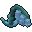
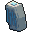
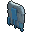

Frostmere quests
Lv 60-80. A snow town in the south-east. 15 quests.
The Road to Frostmere #86
Warden Haru has asked you to carry word to Frostmere, in the snowfields about 1300 blocks south of Hillwatch. Find Chieftain Yuki there. Follow the waypoint.
Warden Haru sent you? Then you are welcome in Frostmere. The glacier is moving. Everything that sleeps in the ice is waking, and hungry.
Frost Wolves #87
Defeat 8 Frost Wolves in the snowfields north-west of Frostmere, then return to Chieftain Yuki in Frostmere.
That's 8 fewer. The people of Frostmere can breathe a little.
Snow Wisps #88
Defeat 8 Snow Wisps in the snowfields south-east of Frostmere, then return to Hunter Sven in Frostmere.
8 of them, and not a scratch on you? Frostmere is lucky you came.
Rime Salamanders #89
Defeat 8 Rime Salamanders in the snowfields south of Frostmere, then return to Hunter Sven in Frostmere.
Good work. The ground out there is ours again, for now.
Glacier Wardens #90
Defeat 3 Glacier Wardens in the snowfields north-east of Frostmere, then return to Chieftain Yuki in Frostmere.
3 of those brutes. Even the old hunters never managed that. You're ready for what's next.
The Frost Tiger #91
Defeat the Frost Tiger in the snowfields well to the west of Frostmere, then return to Chieftain Yuki in Frostmere.
It's down! I saw the smoke from here. Only one thing is left out there now, and you know what it is.
The Glacier Tortoise #92
Defeat the Glacier Tortoise in the snowfields well to the south-west of Frostmere, then return to Chieftain Yuki in Frostmere. Bring friends and potions.
The glacier is still. Frostmere owes you more than furs. A royal herald from Rustcliff, the castle kingdom on the red cliffs to the west, came through asking for fighters. King Aurelian will receive you.
Frostmere Bounty #93
Defeat 12 Frost Wolves in the snowfields north-west of Frostmere and report to Hunter Sven. A one-time bounty.
Good hunting. Frostmere pays its hunters fairly.
Bells for the Hunters #207
Pick 8 Frostbell Orchids from the frostbell patches in the snowfields around Frostmere and bring them to Herbalist Kari at the herb stall on the north side. A one-time order.

Frostbell OrchidTurn in to Herbalist KariNot one bell cracked. The hunters will sleep warm tonight.
Wisp Lights #208
Defeat 10 Snow Wisps south-east of Frostmere, then report to Hunt Warden Leif upstairs in the east longhouse in Frostmere. A one-time job.
Ten wisps out. The night path is dark again, as it should be.
Salamander Thaw #209
Defeat 10 Rime Salamanders south of Frostmere, then report to Hunt Warden Leif upstairs in the east longhouse in Frostmere. A one-time job.
Ten salamanders. The wells will thaw by morning.
Rime Heartwood #210
Bring 3 Rime Heartwoods to Hunt Warden Leif upstairs in the east longhouse in Frostmere. The Glacier Wardens north-east of Frostmere drop them. A one-time job.

Rime HeartwoodTurn in to Hunt Warden LeifThree pieces, frozen through. Bjorn will be happy for once.
Stew for the Hunters #211
Take Cook Astrid's pot of stew to Hunter Sven on the hunters' porch in the middle of Frostmere.
Astrid's stew? Still warm. Tell her the hunt owes her a pelt.
Wolf Pelts #212
Bring 5 Frost Wolf Pelts to Ice Guard Rurik at the south-east road in Frostmere. The Frost Wolves north-west of Frostmere drop them.

Frost Wolf PeltTurn in to Ice Guard RurikFive pelts. I'll line my cloak with one; this gate is cold.
A Snow Charm #213
Take Little Eira's snow charm to Chieftain Yuki in her house on the north-east side of Frostmere.
A charm from Eira? I'll wear it. Tell her the Chieftain feels warmer already.
Data comes from the live Arvan server and updates when the wiki is rebuilt. Spotted a mistake? Tell us on GitHub.